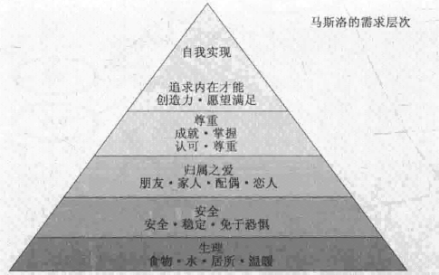
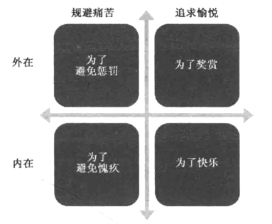

玩家的动机驱使着玩家的脑
需求

更多需求
三大精神需求：
- 胜任：我需要觉得自己擅长做什么
- 自主：我需要按自己的方式做事的自由
- 关联：我需要和其他人建立联系
22号透镜：需求
- 我的游戏主要运作在马斯洛层次的哪一层？
- 我的游戏是否满足“胜任、自主、关联”的需求？
- 我怎样让游戏在现有水平上，满足更多基础需求？
- 游戏已经满足的需求，怎样令其满足得更好？
人类的一切行为，都是在以某种方式满足这些需求。
内在动机、外在动机
另一种考量动机的方式，是观察其来源。
游戏设计师面对自己游戏中的各种动机需要明了其有几分内在、几分外在。
想做与得做
追求愉悦和规避痛苦属于脑中两个不同的系统。
要观察你的游戏给人什么动机，请将每种动机放入以下矩阵中看看：

23号透镜：动机
- 玩家因何种动机来玩我的游戏？
- 其中哪些动机是最内在的？哪些是最外在的？
- 哪些是追求愉悦的？哪些是规避痛苦的？
- 哪些动机互相支撑？
- 哪些动机互相抵触？
创新
玩家购买游戏的一大动机就是渴求新奇。
创新中最强力者，是带来全新的思考方式。
24号透镜：创新
- 我的游戏有何新奇之处？
- 新奇之处是贯穿我的游戏，还是仅限于开头？
- 新奇和熟悉的混合感觉对吗？
- 新奇感褪去后，玩家还喜欢玩我的游戏吗？
评断
所有人内心深处都有一个共同需求，需要他们评断。游戏最吸引人的一点，就是可以系统且出色地给人客观的评价。
25号透镜：评断
- 针对玩家，你的游戏都评价些什么？
- 游戏怎样传达这种评断？
- 玩家觉得评断结果公平吗？
- 他们在意评断结果吗？
- 评断结果是否让他们想要加强能力？
创造优秀游戏的每一方面，最终都要回归到人类动机上。把它当做起点，在此基础上，对我们行事的原因建立起越来越深刻的理解。